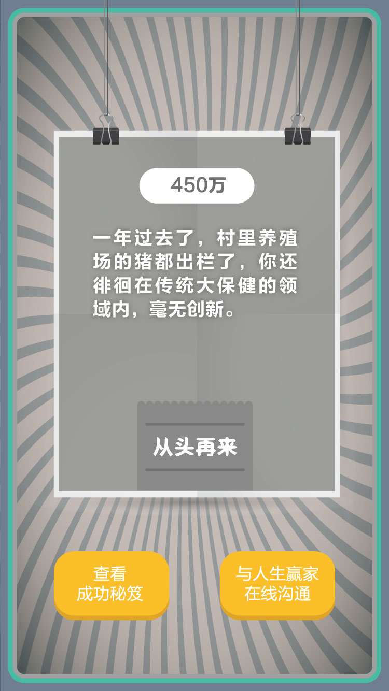

大保健传奇

大保健之父说过，有清晰的数字化战略，明确企业定位是迈向成功的第一步。作为新任CEO，你准备大干一番：
- 过劳白领满街爬，趁机多开门店捞钱，先在CBD开家分店，未来实现全国连锁。
- 从东莞引进“技术人才”，研发新服务，打造大保健界的天上人间。
- 孤“剑”难鸣，互联网发展这么快，先搭平台再找伙伴，把大保健做成大健康。
有清晰的数字化战略，明确自身在行业生态系统中的定位，是决定企业未来竞争力的问题。同时，只靠自己的力量是不够的，一定与其它的数字化企业合作，有伙伴才有未来！
